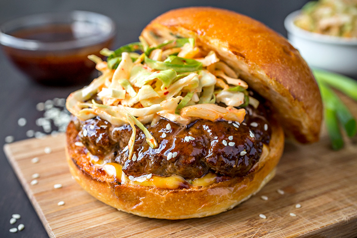

Korean BBQ Burgers

Description:
Description:
This recipe adapts the classic burger to add the tangy spike of Korean BBQ flavor.
The secret is adding the sauce to the meat before and during cooking.
Ingredients:
- Potato bun
- 85% lean ground beef
- Lettuce
- Tomato
- Soy sauce
- Turbinado sugar
- Black pepper
- Fresh garlic
- Spring onion
- Sesame oil
- Mayonnaise
Steps:
- Combine soy sauce, sugar, black pepper, garlic (minced), and spring onion.
- Add 1 tbsp of mixture to mayo, along with 1/2 tsp sesame oil.
- In a large bowl, mix beef with 2 tbsp of soy sauce mixture.
- Form beef into patties. Before cooking, brush patties with soy sauce mixture.
- When ready, flip burgers. Brush again with soy sauce mixture.
- Toast bun. Server burgers with lettuce, sliced tomato, and mayo spread.
Home